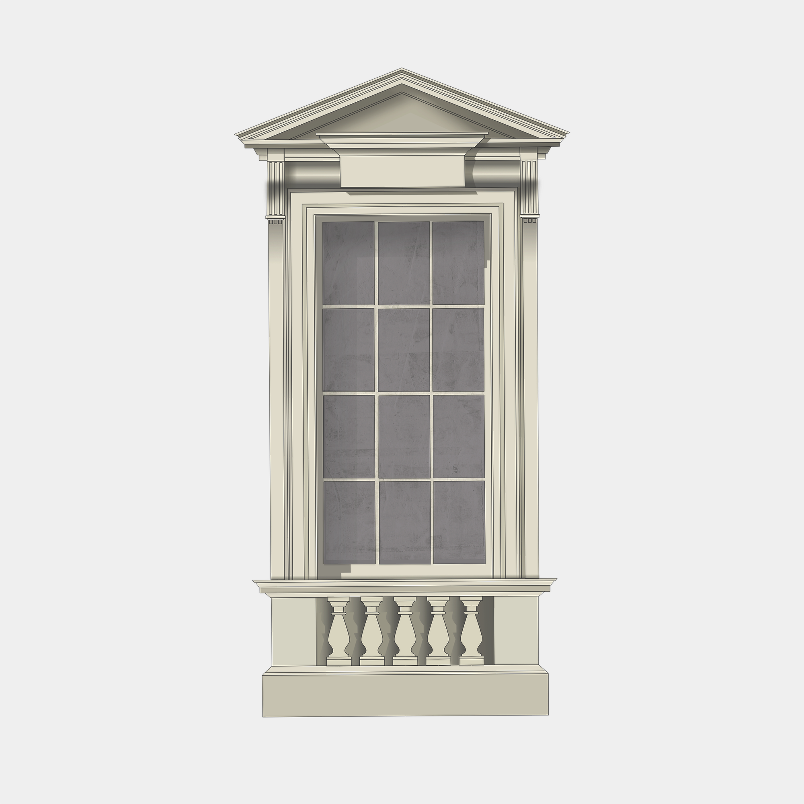
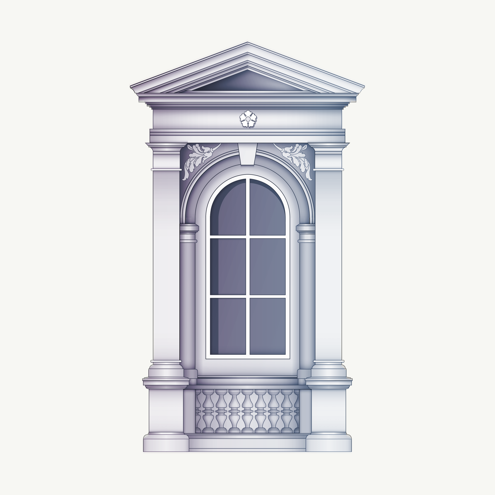
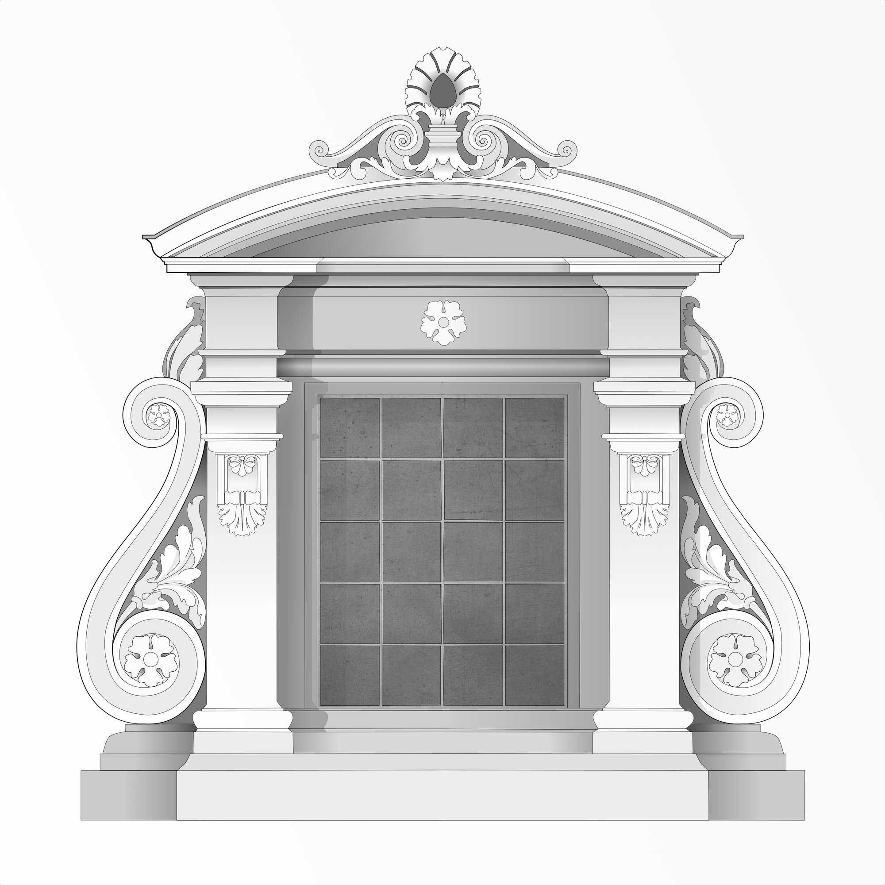
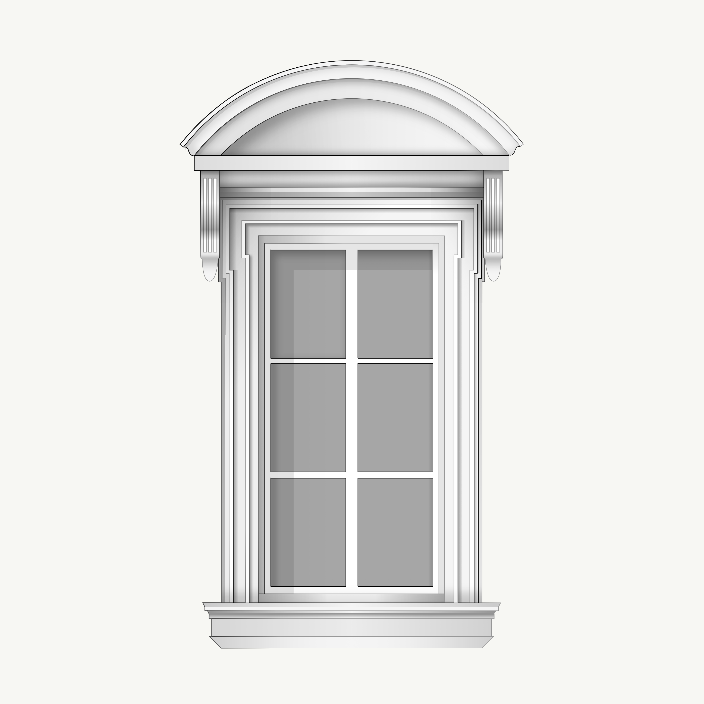
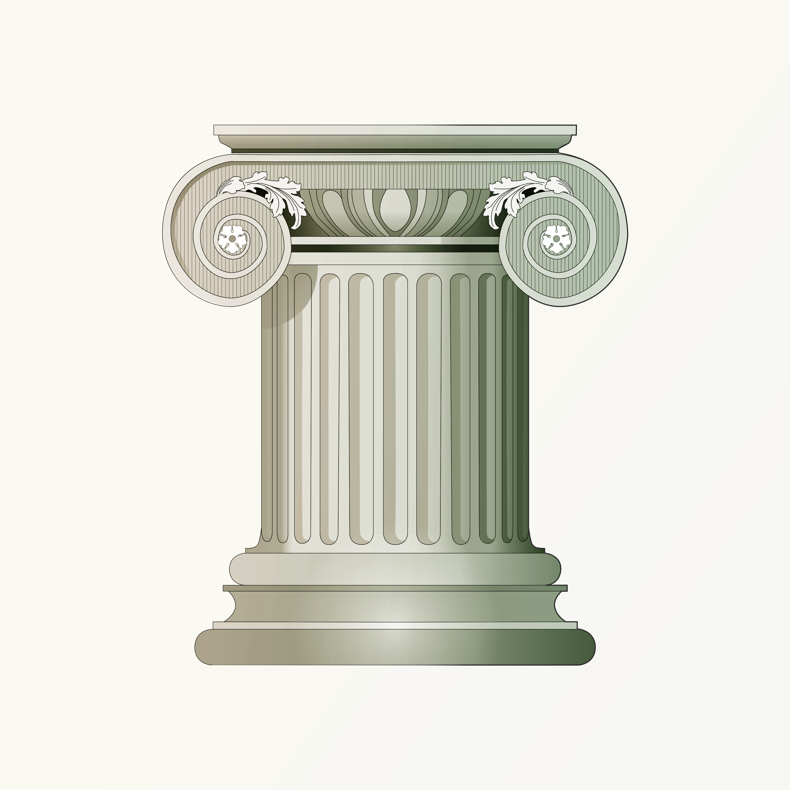
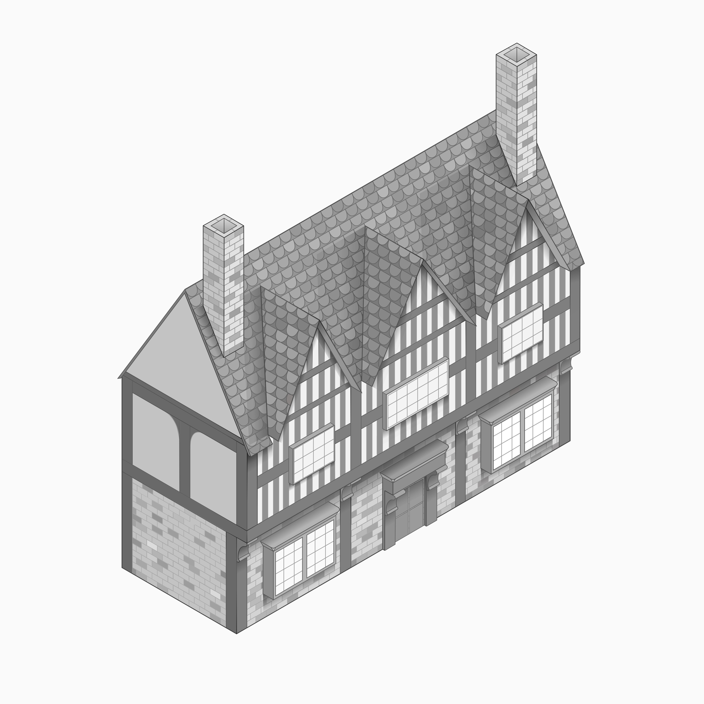

Creative Spoliation in Architecture

Molded Pediment, Pilasters & Baluster Apron

Pedimented Fenestration & Decorative Relief Study

Ornamental Stonework & Roofline Elevation

Curved Hood, Fluted Consoles & Molded Architrave Detail

Floral Volutes, Egg-and-Dart Echinus & Attic Base Study

Half-Timbering, Triple Gables & Masonry Base Study
This illustration series explores classical architectural language and craftsmanship through the concept of spoliation—reimagining historical elements like Mannerist volutes and Renaissance pediments in new digital compositions.
By combining disparate motifs through precise draftsmanship, proportion, and geometry, the project honors traditional architectural syntax while expanding its creative boundaries beyond rigid replication.
The primary objective of this work is to study and celebrate traditional architectural syntax while pushing beyond rigid historical replication. By analyzing how disparate motifs interact when unified through precise draftsmanship, proportion, and geometry, these illustrations seek to honor traditional craftsmanship while opening up new creative possibilities within classical design.
All illustrations in this project are 100% human-created. No artificial intelligence was used to generate or synthesize any visual content.